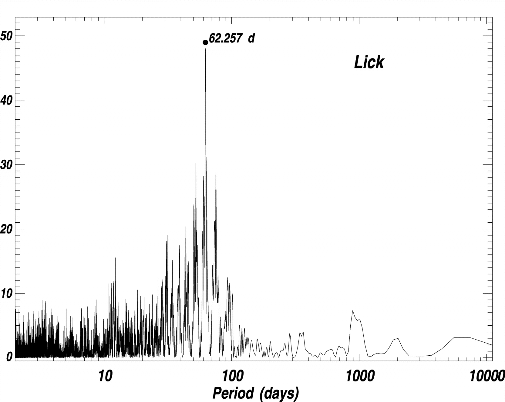
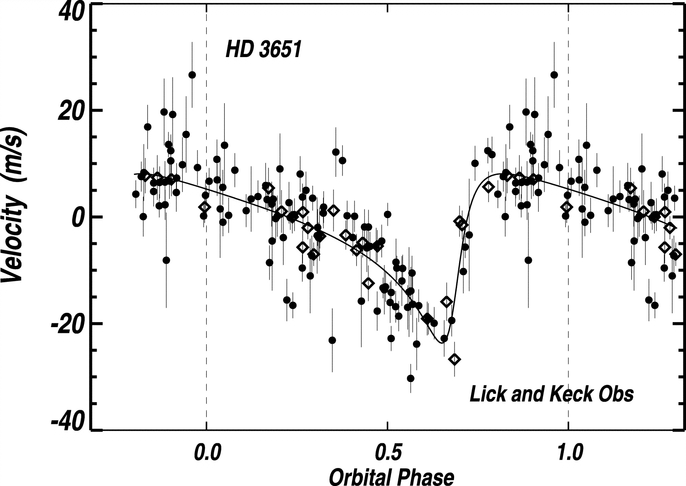

| |
Extrasolar planet radial
velocities
The CASt dataset
exoplanet_RV.dat
Astronomical background
Until 1995, astronomers had direct
evidence for only one planetary system orbiting a normal star, our
Solar System. Protostars were known to have dusty protoplanetary
disks consistent with the formation mechanism developed for
our Solar System, but the planets themselves were elusive because they
are so small and faint. However, extremely accurate (parts in a
million) spectroscopy of bright, nearby solar-type stars have recently
revealed small periodic Doppler (radial velocity) shifts indicating the
star is wobbling back-and-forth as some unseen object orbits. The
first case was the wobble of 51 Pegasi reported by Swiss astronomers
Michel Mayor and Didier Queloz. Knowing the period and velocity
amplitude of the wobble, and the mass of the primary star, standard
theory based on Newton's laws are applied to infer the mass and orbit
of the orbiting object. Typical inferred masses are around the
mass of Jupiter -- thus the discovery of exoplanets has
emerged.
Today (mid-2006), nearly
200 planets have been found around nearby stars, most found using the
Doppler wobble method. An updated list with inferrred properties
is provided by The Extrasolar Planets
Encyclopaedia. Masses range from 0.02 to 15 Jupiters, orbital
periods range from 1 day to a decade, and eccentricities range
from zero to 93%. The findings have opened up many new
astrophysical investigations concerning the origin and evolution of
planetary systems. Many observational programs are underway,
including space-based observatories, to detect and characterize more
exoplanets.
Datasets
The detection of a
periodicity and estimation of orbital
parameters from typical radial velocity datasets is statistically
challenging. The observations are sparse, unevenly spaced, and
with heteroscedastic measurement errors (of known variance). The
periodic behavior is non-sinusoidal if the orbital eccentricity is
non-zero. Methods considered include: simple Fourier analysis,
the Lomb-Scargle periodogram for unevenly spaced data,
maximum-likelihood estimation, and Bayesian inference.
We give here three radial
velocity datasets. The following table summarized the
datasets. HD refers to the 19th century Henry Draper catalog of
bright stars. Mass estimates assume an edge-on orbit (inclination
90o). N gives the number of radial velocity
measurements. Period (in days), Mass (in Jupiter masses) and
Eccentricity give the published derived parameters from The Extrosolar
Planets Encyclopaedia. Reference gives the discovery paper (see
the Encyclopaedia for full references). The figure below show a
periodogram for part of the HD 3651 data, and the radial velocities
with best-fit orbital model folded with the P=62.23 day period.
HD
|
N
|
Per
|
Mass
|
Ecc
|
Reference
|
88133
|
17
|
3.41
|
0.22
|
0.11
|
Fischer et al. 2005, ApJ 620, 481-486
|
37124
|
52
|
154.46
|
0.61
|
0.053
|
Vogt et al. 2005, ApJ 632, 638-658
|
|
|
843.6
|
0.6
|
0.14
|
|
|
|
2295
|
0.66
|
0.2
|
|
3651
|
138
|
62.23
|
0.2
|
0.63
|
Fischer et al. 2003, ApJ 590, 1081-1087
|


The columns are:
- Day of
observation (in modified Julian days)
- Radial velocity (RV, in meters/second,
after
heliocentric correction)
- RV standard deviation (in meters/second). This is
determined from detailed analysis of the spectrum from which the RV is
measured.
- For HD 4651, this column gives the observatory at which the
observation was made
Statistical exercises
- Recover the published
periodicities in the datasets.
Compare various methods. Estimate the reliability and confidence
intervals for the periods and eccentricities. Evaluate an optimal
observational strategy for improving the orbital determinations for
each system.
These
datasets were generously provided by Eric Ford (University of Florida)
for the
Exoplanets Working Group of the 2006 SAMSI Astrostatistics Program.
|